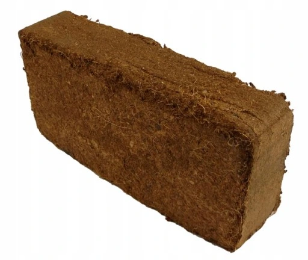
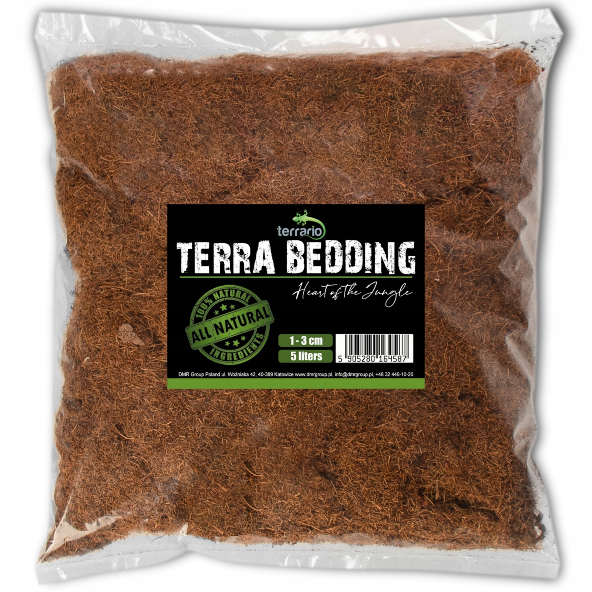
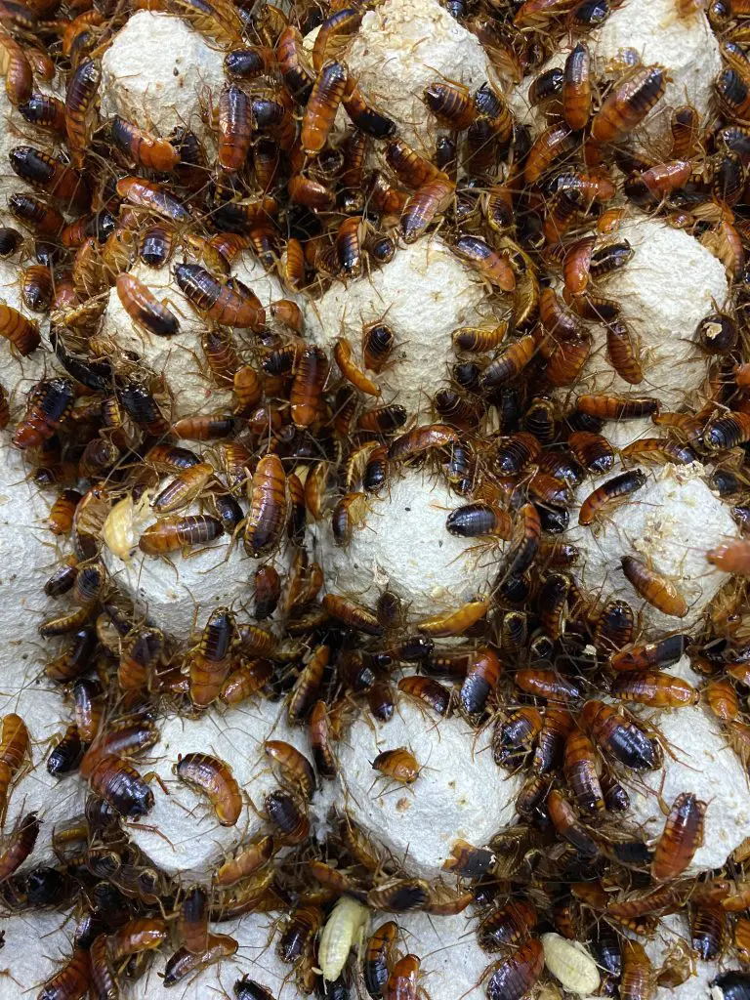
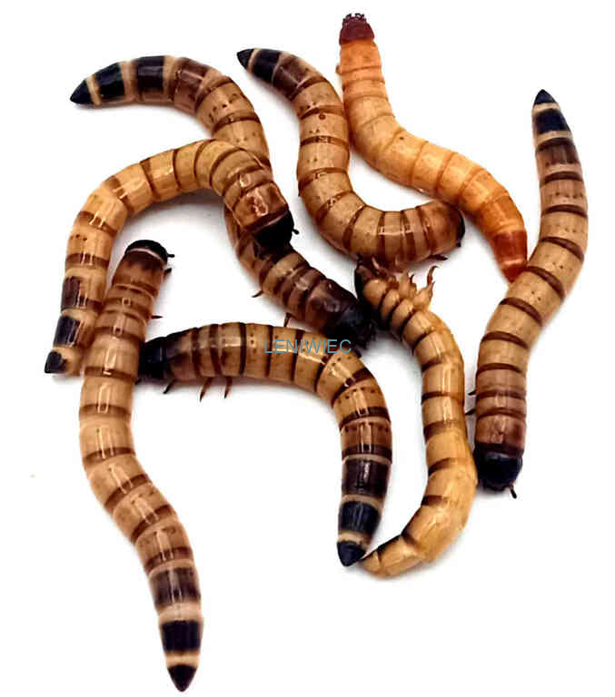
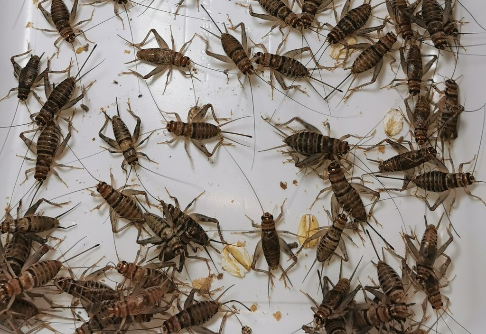
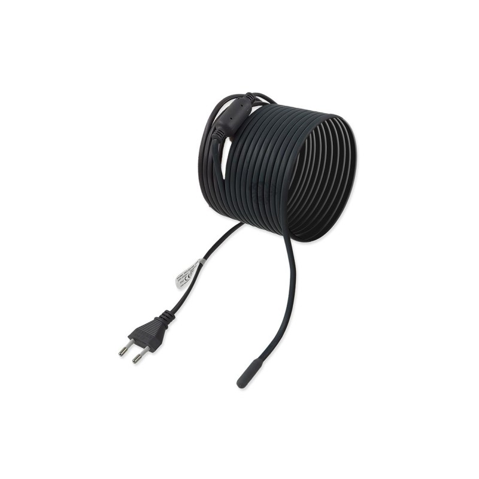
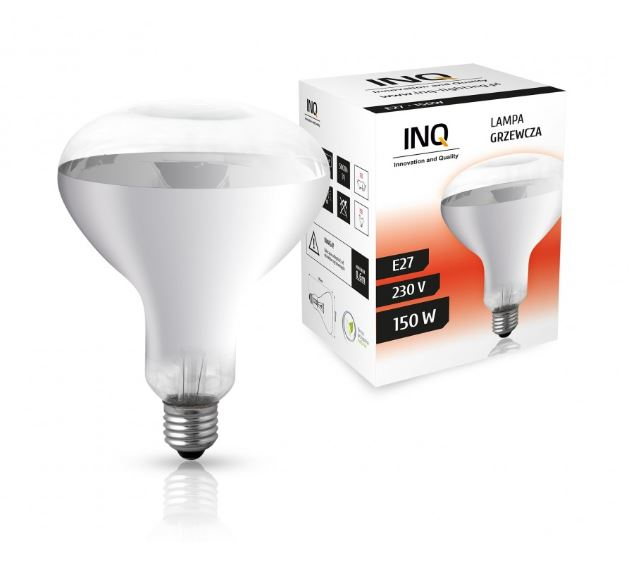
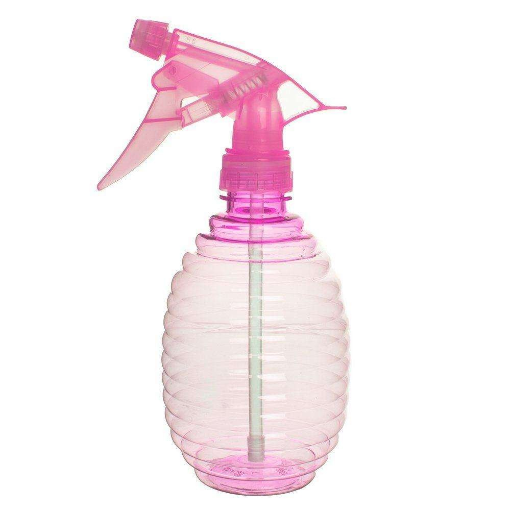
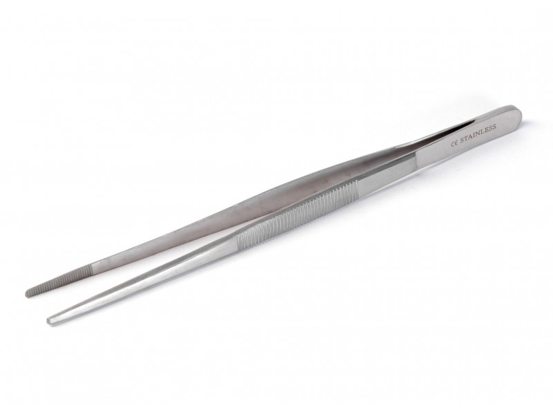

Wszystko co powienieneś mieć i wiedzieć przed nabyciem dorosłego ptasznika
Pojemnik
Jeśli mówi o osobnikach dorosłych, najlepszym rozwiązaniem będzie terrarium o docelowych wymiarach, czyli takich jakie są wymagane dla
konkretnego gatunku. Jeśli jednak mamy okrojony budżet dowolny pojemnik z odpowiednią cyrkulacja powietrza i przystepna przezroczystością bedzie w porządku. Mówiąc o terrariach wyróżniamy w sumie dwa rodzaje: z gilotyną i przesuwane na boki.
Terrarium z gilotynąTerrarium z przsuwaniem
Podłoże
Tutaj nic się nie zmienia. Najlepsze i najbardziej dostępne będzie włókno kokosowe. Nie kupujmy podłóż w sklepach ogrodniczych z napisem "włókno kokosowe".
Nie sa to podłoża przystosowane dla zwierząt i moga zawierać robaki lub pasożyty. Dostosowane są one jedynie do roślin.

Włokno kokosowe do rozrobienia z wodą

Włokno kokosowe gotowe
Karmóweczka
Dorosłe możemy karmić świerszczami, drewnojadami oraz karaczanami. Przy większych gatunkach takich jak. Lasiodora lub Acanthoscurria moża wrzucać szarańcze, aniektórzy hodowcy karmią je również
małymi gryzoniami czego odradzam. Taka przykładowa mysz może uszkodzić pająka pazurami a co najgorsza może go ugryść. Proszę nie róbcie walk zwierząt.
Cały czas nie jestem za karaczanami ponieważ gdyby karaczany uciekły z pojemnika to łatwo moga się mnożyć i krzyżować z innymi owadami.
Skutkuje to po prostu inwazją w mieszkaniu bądź domu bardzo trudna do wytępienia.
Drewnojady są fajnym rozwiązaniem ale polecam odciąc lub zgnieśc głowę przed podaniem, aby zlikwidować ryzyko uszkodzenia lub zabicia pajączka przy wylince.
Według mnie najlepsze są świerszcze. Przy ewentualnej ucieczcenie nie rozplęgnie się po mieszkaniu i nie zapokie się w ziemi i nie zje pająka żywcem podczas linienia.
Dokarmianie owadami złapanymi z podwórka jest możliwe, ale lepiej jak są to hodowlane owady, bo te z natury mogą zawierać szkodliwe substancje.

małe karaczany

mącznik młynarek

młody wylęg świerszczaszrańcza wędrowna
Dogrzewanie
Jest mnóstwo sposobów na ogrzewanie ptaszników. Najbardziej prymitywnym jest lampka biórkowa z wkręconą tzw. "kwoką". Jednak ptaszniki nie przepadają za mocnym światłem.
bardziej pro opcjami na dogrzewanie są kable i maty grzewcze. W przypadku jednego ptasznika kabel grzewczy według mnie odpada,bo po co nam długi przewód do jednego pająka.
Maty jest to tania opcja. Sam taki "grzejnik" dla pajaka nie jest drogi.
Polecałabym ta większą (rozmiar ok. 15x28 cm). Wkładamy ta matę tak aby dolegała do jednej z bocznych ścianek. Nie wolno kłaść pojemnika z ptasznikiem na grzejnik. Możemy tak szybko przesuszyc podłoże.
dodatkowo ptasznik jesli jest mu ciepło z natury zakopuje się w podłożu aby się ochłodzić.
Jeśli pojemnik z pupilem położymy go na kaloryfer zakopie sie on w jeszcze cieplejszym podłożu i się przegrzeje. "taka sama, jeżeli to przechodzimy dalej operator- Karol
mata grzewcza

kabel grzewczy

żarówka grzewcza (kwoka)
Utrzymywanie wilgotności
Pająki jak każde stworzenie potrzebują wody by żyć. Ptaszniki regularnie należy nawadniać. Jedną część pojemniczka przynajmniej 2 - 3 razy z tygodniu zraszamy wodą.
Młodziaki zazwyczaj wolą bardziej wilgotny teren. dobrze też psiknąć troche wodą na scianki, ponieważ również spijają z niej wodę. Tutaj sprawa zbyt dużo się nie zmienia, możemy tylko żadziej je psikać.
Tutaj warto juz dodać płytką miseczkę z wodą.

Spryskiwacz na wodę
Akcesoria i wystrój
Do hodowli pająka bardzo przydatna jest pęseta. Dla dorosłego przydaje się już większy model np. 30 - 40cm. Przy większych może przydać się też i 40 centymetrowa.
jesli chodzi o aranżacje terrarium to możemy już się owiele bardziej pobawić. Podrośnięte pajączki posiadają już prawie takie kolory jak dorosłe i sa też bardziej odporne na pleśń czy grzyb.
Jako tzw."detaling" używa się mchu i porostu (kupionego, nie zerwanego z lasu czy podwórka. Taki z natury niedość, że może zawierać pasożyty to zrywanie go jest również nielegalne).
Jako ładną kryjóweczkę możemy wykorzystać połówkę kokosa lub tubę korkową. Niektórzy terrarysci używaja nawet połówki platkiowej doniczki. W tej chwili mamy na rynku bardzo duzy wybór jeśli chodzi o te rzeczy. Wystarczy wejść w byle jaki sklep terrarystyczny i w każdym znajdziemy coś
dla swojego pająka.

pęseta 30 cm⬅ Powrót do galerii